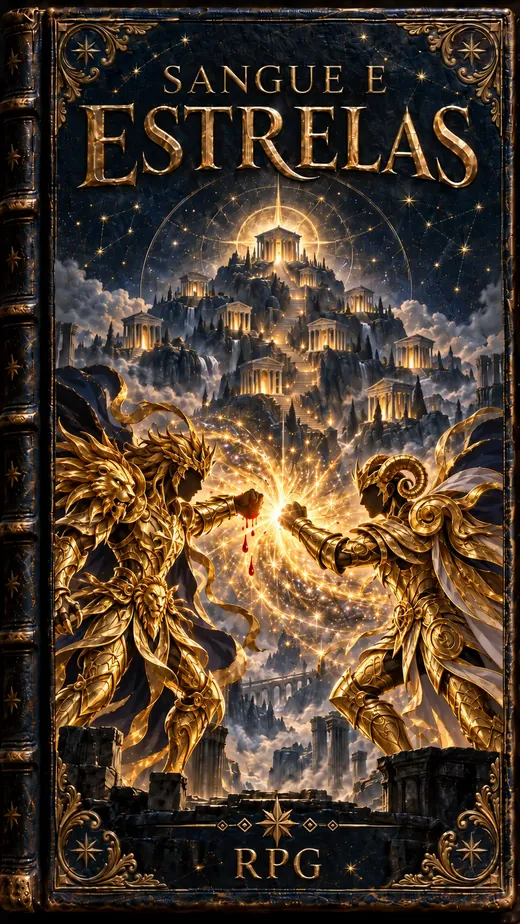

Sangue e Estrelas
RPG de mesa
Uma armadura feita de estrelas escolheu você. Ela vai quebrar, vai morrer, e vai voltar com o seu sangue. Você também.

O livro
Sangue e Estrelas
Tudo num livro só, para jogador e Mestre: o d20, a criação de personagem em nove etapas e sem classes, o motor para montar as suas próprias técnicas, itens e relíquias, e os capítulos do Mestre — inimigos, aliados e como conduzir duelos em paralelo.
- O Cosmo cresce durante a luta, paga as técnicas e não acaba: quando falta, a vida paga.
- A cada nível você escolhe no que crescer: Vida ou Cosmo, técnica ou atributo.
- O Sétimo Sentido: o Ouro chega quando quer e domina; o Bronze, só no limite.
- Os cinco sentidos que um inimigo arranca — e que te deixam mais forte.
- A armadura que racha, se despedaça, morre e volta com sangue — mais forte a cada forma nova.
- Quatro exércitos de exemplo e o molde para o Mestre criar os dele.
Como este sistema é feito
Antes de escrever uma regra, eu pesquisei como outros jogos resolvem as mesmas perguntas: o Cosmo que cresce, o preço de ir além, a armadura que quebra, o duelo com o grupo participando de longe. A pesquisa comparou RPGs de Cavaleiros do Zodíaco já feitos por fãs no Brasil, na França e na Espanha com sistemas como Exalted, Tenra Bansho Zero, Blades in the Dark, 13th Age e Lancer.
Duas coisas não existiam em nenhum deles, e são as duas mais CDZ do sistema: "o mesmo golpe não funciona duas vezes" e o Cosmo mandado de longe por quem não está na luta.
Depois, os números passaram por um simulador que roda milhares de duelos com as regras do livro. Ele já contrariou o rascunho três vezes: a Guerra dos Mil Dias travava 95% das lutas equilibradas, queimar o Cosmo vencia 80% dos duelos nos níveis altos, e dar só golpes comuns rendia tanto quanto usar técnicas no nível 5. As três regras mudaram. Hoje, no duelo justo, um Bronze não vence um Ouro: o milagre vem do grupo inteiro ou da história.
Por último, um teste de estresse tentou quebrar o sistema: builds tortas, técnicas de atordoar, limitações baratas, grupos inteiros contra um inimigo só. O maior achado: quatro Bronzes venciam um Ouro sempre. Com a regra Sozinho contra muitos, vencem umas cinco vezes em dez, e uns três caem no caminho.